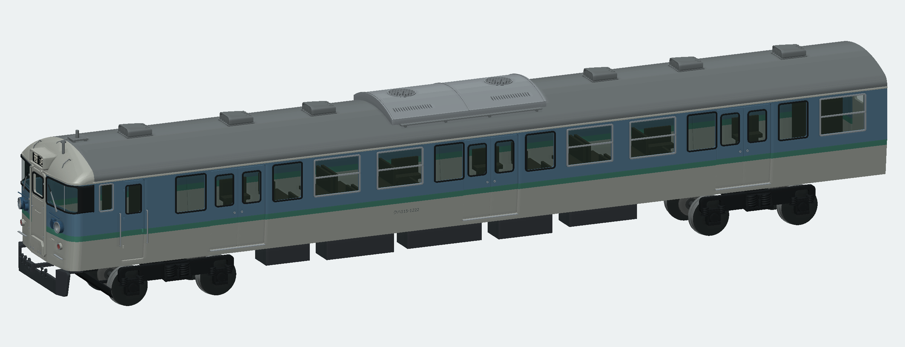
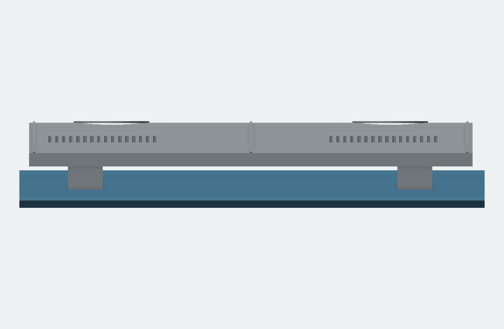
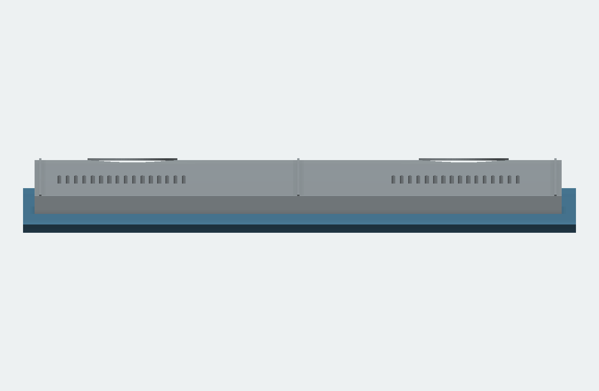
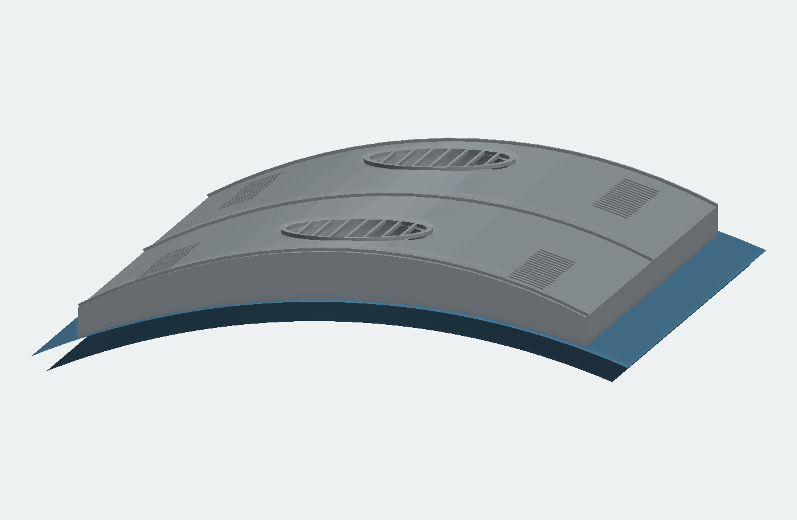
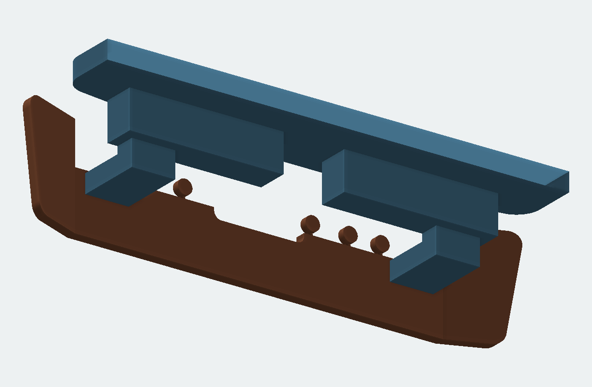
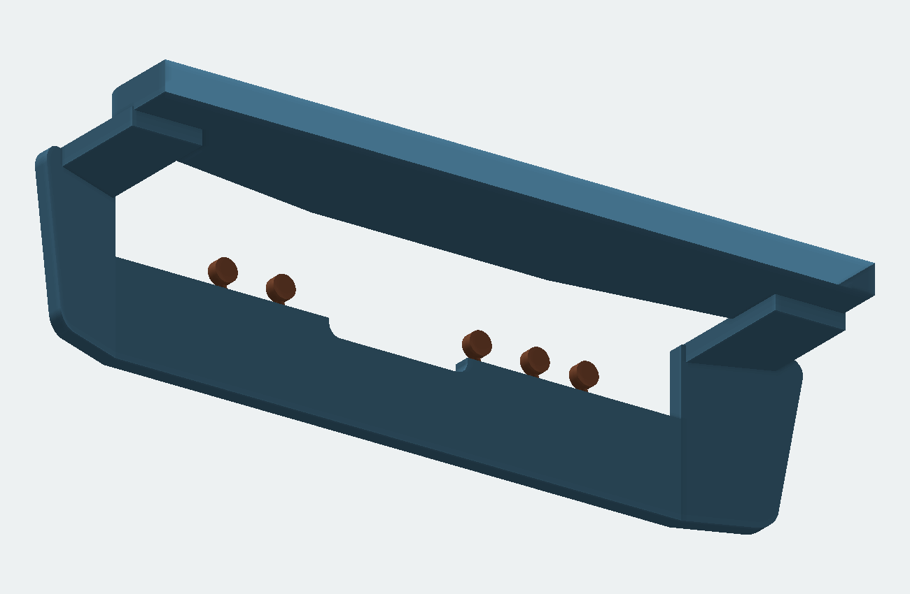
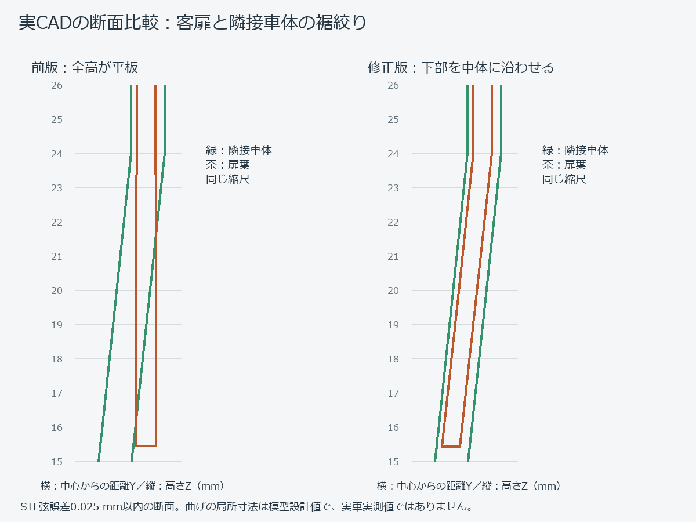
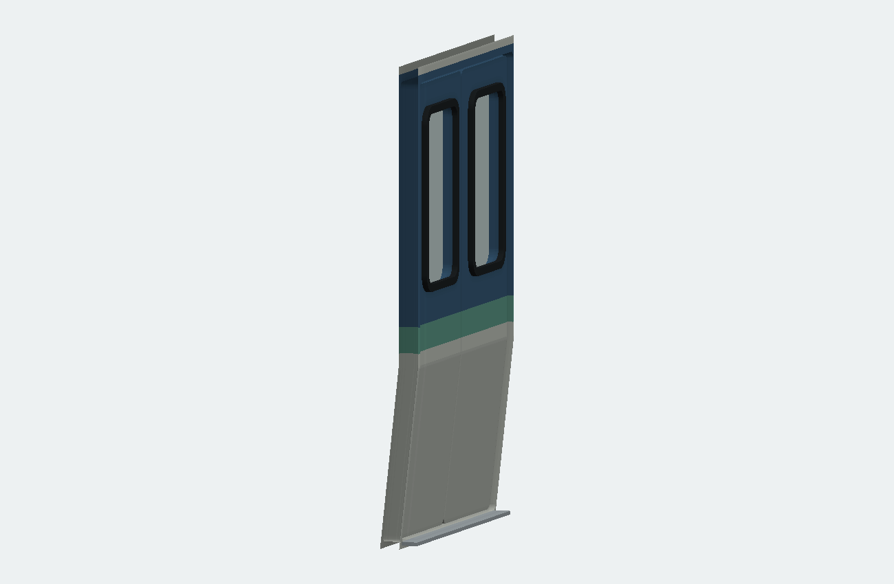
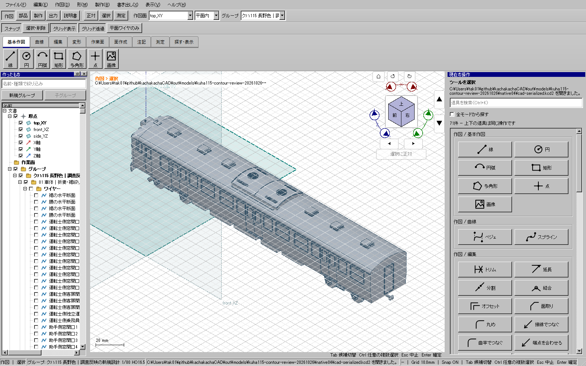

前版は接触検査に偏り、クーラー本体の下の隙間や平板の扉を残していました。今回はクーラー下面、スカートから床への連続性、扉の断面を修正しました。局所寸法は模型設計値です。
通常版CAD ／ 前後分割版CAD ／ 組立手順・制限 ／ 検証記録

高い2本のサドルを廃し、本体を低く配置して端板と長辺下縁を連続させ、下面を実際の屋根曲面で切りました。半円をそのまま置くのではなく、緩いアーチの上面と屋根に沿う下縁です。



青は納まり確認用の屋根色。実形状のSTL描画で、実車写真やCADの操作画面ではありません。メーカー公表外形は参考にしましたが、屋根との取付高さは写真からの推定です。平滑なキセ面の頂点Z48.15 mm、補強帯等を含む上端Z48.300 mm、屋根頂点Z45.675 mm。
細い水平腕と立上りを廃し、スカートの左右上縁から幅広い返しを床板へつなぎ、床板・返し・スカートを1つの閉ソリッドにしました。中央の連結器とジャンパ周辺は開放しています。


これは模型を一体印刷するための接続設計です。実車のスカートが床板の一枚板を延ばした構造だとは断定しません。前後分割版では前半床板とスカートが一体です。
客扉12枚と乗務員扉2枚を修正。上部の窓位置を保ち、Z24 mm以下で下端へ向かって内側に絞ります。車体と同じ断面則を使い、表面を周囲外板から0.28 mm奥へ置きました。客扉下端の外面は中心から16.921 mmで、前版の17.845 mmより約0.924 mm内側です。

緑は隣接車体、茶は扉。窓より下の両端と複数高さを実BRepで検査しています。局所の曲げR・折れ位置は実車の実測復元ではありません。踏板も外板へ食い込まない裏面へ修正しました。

| 版 | 部品 | 点 | 接触 | 全対の干渉候補 | 分割再組立 |
|---|---|---|---|---|---|
| full | 232 | 949 | 93 | 417 | 0 |
| split | 239 | 949 | 93 | 410 | 6 |
全可視部品が有効な1閉ソリッド・正体積。全STEP再読込、全STL閉鎖性・面向き・退化・体積差、保存再読込を確認しました。全対検査の許容値1e-6 mm³、STL体積差上限0.2%は緩和していません。
新しい断面検査を旧モデルにも適用し、クーラーの空隙・床板への非連続・14枚の平板扉の計16件をすべて不合格として検出しました。旧形状を拒否する記録 ／ 欠落・古い証拠を拒否する記録 ／ 断面線データ

上は実際のWindows CAD表示。CAD本体は前回の検証済み配布版と同じ実行ファイルで、今回修正したのは模型の生成と検証です。製品全体試験を今回再実行したという意味ではありません。
同車N15の屋根・客扉・前面の原写真 ／ 三菱電機技報1982年11月・誌面55頁のAU75G。2013年の写真は訓練車時代で、営業時代のすべての細部を確定する資料ではありません。第三者写真は転載していません。
通常版232／分割版239部品。実印刷、接着強度、走行、台車旋回、市販動力との適合は未試験です。旧モデル、ユーザー原本、前回配布は削除・上書きしていません。